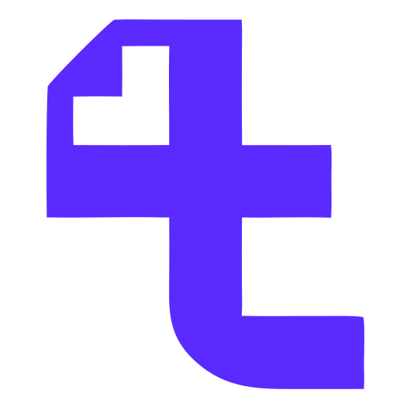
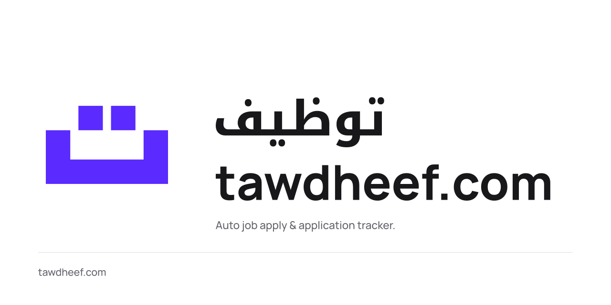

Room to breathe
1 dot
Keep at least one dot’s width clear on every side of the visible artwork. This applies inside a container, too.
Brand system · Arabic Grid · v1.0
A precise identity for Tawdheef, your job-hunt directory and application tracker.
توظيف
رتّب رحلة بحثك عن عمل.
The square dots and open geometric body come from ت, the first letter of توظيف. The mark stands on its own. Tabbio is an optional endorsement.

Tabbiotawdheef.com in the wordmark. Tawdheef in sentences. توظيف in Arabic.
Download this SVGKeep at least one dot’s width clear on every side of the visible artwork. This applies inside a container, too.
Both dots are squares. Each matches the body’s stroke weight. Corners stay square; proportions stay fixed.
Place the endorsement in a footer, launch artwork or about page. Leave it off favicons, app icons and compact headers.
Static favicons, crisp browser tabs and safe app-icon margins. Small masters use integer pixel edges so the dots remain distinct.
Minimum standalone symbol: 16 px. Use the supplied 16, 24 and 32 px masters at those sizes.
Download favicon ICOManrope and Noto Kufi Arabic pair a friendly Latin voice with a structured Arabic rhythm. The application keeps its familiar platform font for working text.
Your job search, organised.
Use lowercase tawdheef.com for the logo, Tawdheef in prose, and tawdheef for repository names and handles.
توظيف
رتّب رحلة بحثك عن عمل.
دليل جهات العمل ومتابعة طلبات التوظيف
Select a swatch to copy its hex value. Use green for confirmed success, rather than treating brand purple as an application outcome.
The body stays grounded. The dots briefly settle into place, or pulse while something is loading. Idle logos and favicons stay still.
Idle · static mark
This is a motion demonstration. It does not indicate application activity.
Every master logo is SVG path artwork. No embedded raster images, missing-font substitutions or generated texture.

Use the supplied artwork. Preserve proportions, square dots, colour and breathing room. Use white artwork on dark or purple backgrounds.
English lockups start at 180 px wide; Arabic at 140 px. Bilingual starts at 260 px; stacked at 160 px. Below that, use the symbol alone.
Use the symbol for GitHub avatars and browser tabs. Use the wordmark in app headers. Keep the optional Tabbio line separate.
SVG, PNG, ICO, local fonts, licences, motion source and brand tokens.